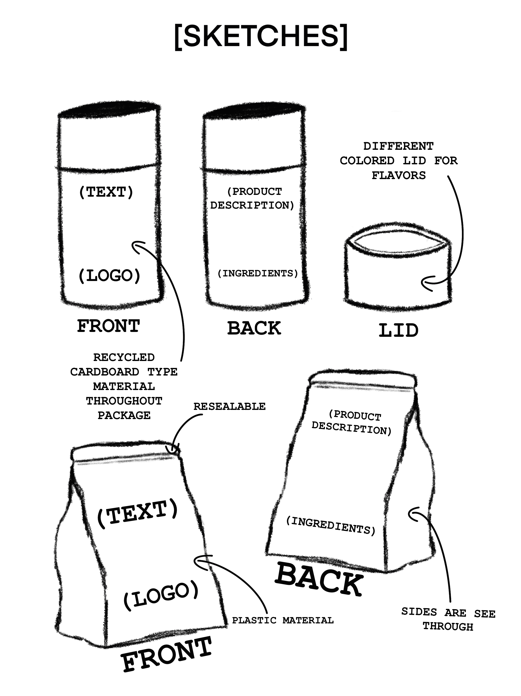
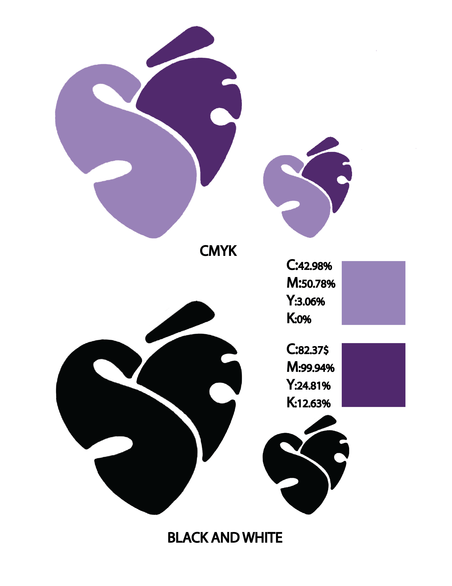
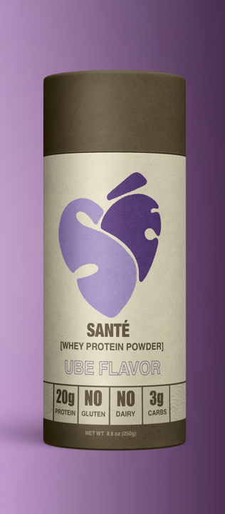
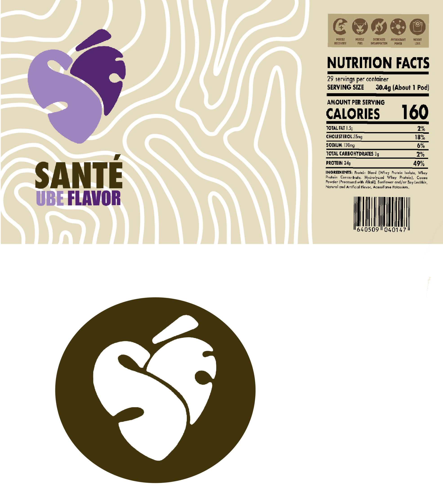
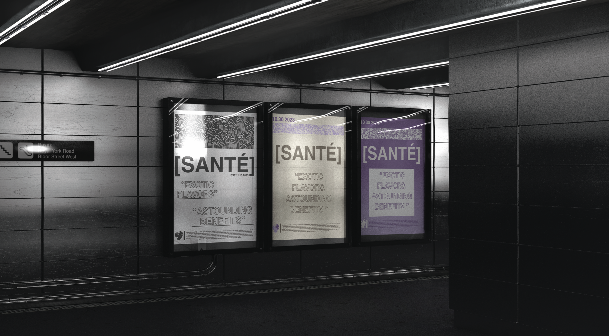
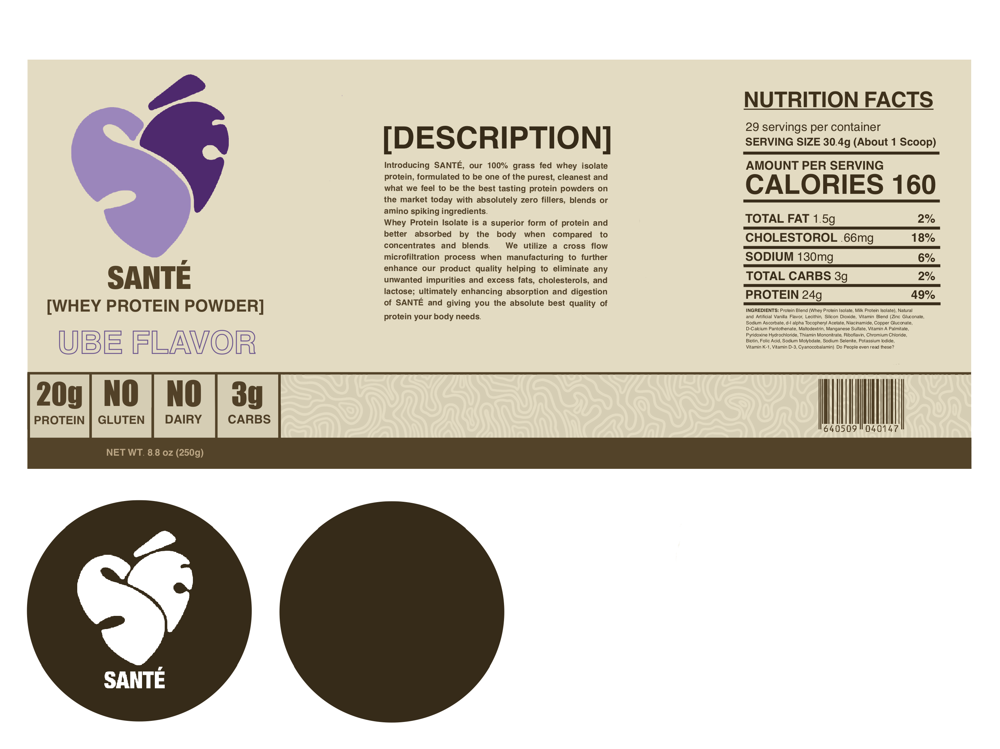
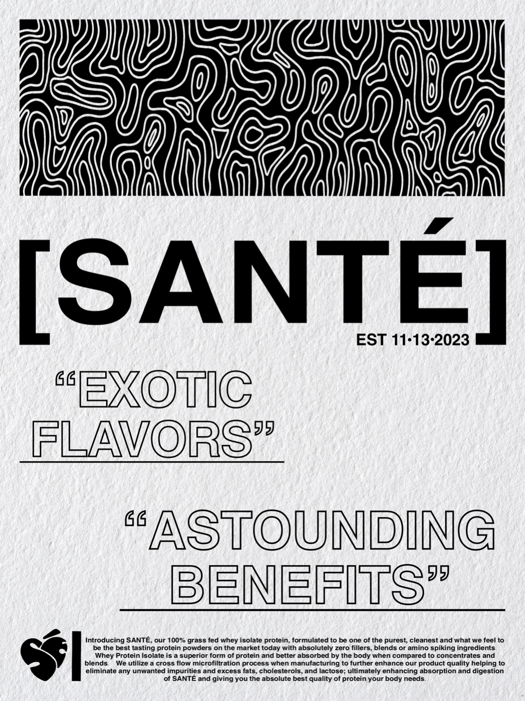

My first week for the project was used to research for inspiration and product choice. I had always been into sports and sport supplements so settling for a product was not too hard. Looking at all the package designs however, I had noticed that most designs were very similar. Bold sans-serif fonts with very vibrant colors and distracting patterns which made the package's legibility quite hard. I wanted to design a package that was not only visually appealing but also simple to read.

For the second week, my main focus was to settle on a brand name, logo, along with rough for my package design. The brand name had come to me while I was reading a french new article and read the word "santé" which is french for health. Once I had settled on the brand name, the logo design was next. I had gone through numerous sketches and before setlling on a simple heart shaped SÉ to represent health.


On my third week, I had spent the majority of my time going though the numerous amounts of sketches that I had and picking out the ones that I had liked the most. My main goal for the designs was to keep everything simple and easy to read but also have some design elements that makes it unique. There was a pattern that I had created that I had gotten inspiration from looking at purple yam and wanted to incorporate that in to my package design somehow. After finally creating a package design I was happy with, I had begun creating the posters/ads for the brand. Looking at existing examples of posters for brands in the same industry, I wanted to do something different to stand out a bit but not too much as to push away potential clients; keeping everything simple with somewhat dull colors.

Lastly, on the fourth and final week, I had polished up all of my designs and had begun with mockups. I had spents hours looking for a package that could really represent the brand in a way that made it feel luxurious/trustworthy. The final product for the package mockup looked exactly I had envisioned the brand to be, no flashy colors or any distracting elements. As for the posters I had managed to incorparate the pattern in a way that was not too distratcing.
All in all the whole process from start to finish was a huge learning experience as I got to learn how to learn new tools in photoshop and also improving on my time management skills and organizing/planning.




